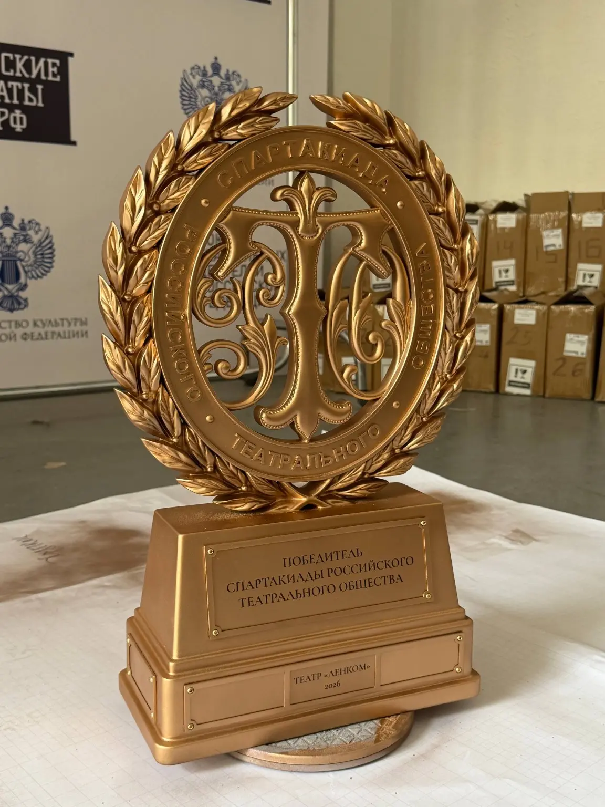

Реализовано01СТД России · награда · 3D-печать
Переходящий кубок Спартакиады РТО
Из портфолио команды STEP_3D
- Переходящий кубок
- Реализовано в 2026
 ТехнопаркДизайн и инжинирингОбсудить задачу
ТехнопаркДизайн и инжинирингОбсудить задачу 06 / Направление лаборатории
Создаём награду как узнаваемый образ события или бренда. До запуска серии согласуем цифровую модель, визуализацию или физический образец.
Обсудить задачу ↗Результат этапа
С чем можно обратиться
Как устроена работа
Связываем идею награды с событием, ценностями и визуальным языком заказчика.
Прорабатываем форму, основание, надписи, соединения и устойчивость.
Изготавливаем прототип и согласовываем масштаб, цвет, фактуру и упаковку.
Фиксируем эталон и производим согласованное количество изделий.
Практика
Посмотрите примеры геометрии, производственных этапов и готовых изделий.

Реализовано01СТД России · награда · 3D-печать
Из портфолио команды STEP_3D
 Реализовано02
Реализовано02СТД России · полный цикл · 10 дней
Проект представлен Технопарком РГСУ
Для оценки нужны назначение, габариты, исходные данные и желаемый срок. Состав работ и стоимость обсуждаем индивидуально.
Подготовить обращение ↗